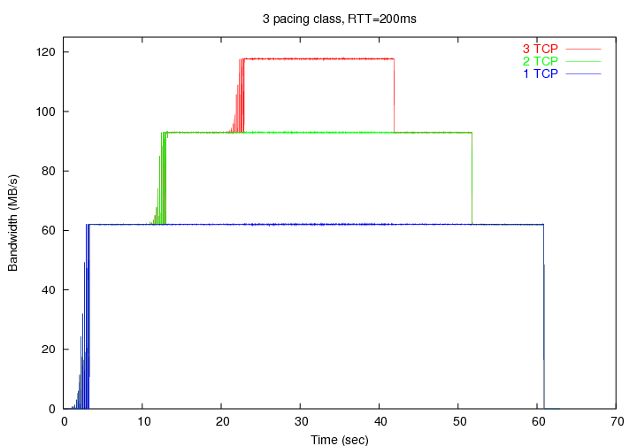
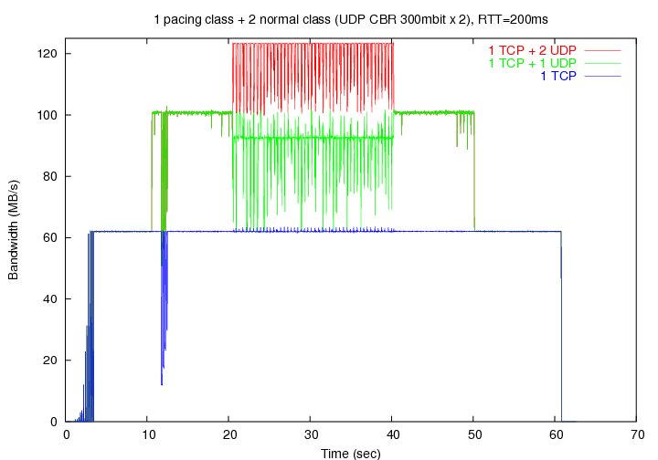

1. Introduction
This document describes the usage of PSPacer (Precise Software Pacer),
which achieves precise network bandwidth control and smoothing of bursty
traffic without any special hardware. PSPacer is implemented based on
the iproute2 which is the traffic control framework for the Linux platform.
This framework provides three basic elements: queueing discipline (qdisc),
class, and filter [lartc]. PSPacer consists of two parts: a loadable
kernel module and a user-level library. The former (i.e. sch_psp) is
a classful qdisc, and the latter (i.e. q_psp.so) communicates with this
module for control and monitoring it via the tc (8) command.
PSPacer uses the IEEE 802.3x PAUSE frame as a gap between packets.
Therefore, you can not use the PAUSE frame to stop transmission from the
switch/router to which the system is connected. It is recommended to
disable IEEE802.3x flow control function of the network switch (to which
a PC with PSPacer is connected) in order to avoid unexpected behavior.
For your information, see our PFLDnet2005 paper [PFLDnet05], and the Web
page http://www.gridmpi.org/gridtcp.jsp.
2. Compilation
Since the kernel and the iproute2 package are tightly coupled, you must use
a proper combination. We have tested this package using the FedoraCore 3
on IA32 machines with the Intel PRO/1000, and the FedoraCore 5 on x86_64
machines with Broadcom BCM5704.
The complete list of tested environments is in the Appendix B.
|
Note
|
PSPacer version 2.x does not support the Linux kernel 2.4! |
2.1. Preparation
The following source codes are required for the compilation:
-
Linux kernel 2.6.x
-
iproute2
2.1.1. Linux kernel
The kernel re-compilation is not required, however the compilation of the
sch_psp module requires the kernel source code. If you use the RedHat Linux
based distribution, install the kernel-devel (or kernel-smp-devel) RPM.
For your information, if you have built the custom kernel, make sure that
the CONFIG_NET_SCHED and CONFIG_NET_CLS options have been selected.
2.1.2. iproute2
Make sure the current working version of iproute2 is available in your Linux
box. To check the version, issue the following command:
$ /sbin/tc -V
tc utility, iproute2-ss040831
Get the iproute2 archive file from the iproute2 web page [iproute2],
and extract it to /opt/iproute2 directory.
$ cd /opt
$ wget http://developer.osdl.org/dev/iproute2/download/iproute2-2.6.9-ss040831.tar.gz
$ tar zxvf iproute2-2.6.9-ss040831.tar.gz
$ ln -s iproute2-2.6.9 iproute2
|
Tip
|
If you extract the iproute2 archive to the other directory, do configure
with the option —with-iproute2-dir to specify the directory (see the next
section). |
|
Note
|
In the FedoraCore 3 after “yum update”, the kernel and the iproute2
will have mismatching versions. You have to choose either downgrading the
kernel to version 2.6.9 or upgrading the iproute2 to version ss050330 manually. |
2.1.3. libnl
(EXPERIMENTAL) On version 2.1 or later, it provides to support libnl
- netlink library for applications to set parameters of PSPacer.
To enable libnl with PSPacer support, get the libnl library from libnl
web page [libnl].
|
Note
|
PSPacer 2.1 provides the patch for libnl-1.0-pre6. |
2.2. Make and install
To make and install this software, issue the following commands:
$ tar zxvf pspacer-<version>.tar.gz
$ cd pspacer-<version>
$ ./configure
(or $./configure --with-iproute2-dir=/<path>/iproute2-2.6.9-ss040831.tar.gz
$ make
$ su
# make install
./configure —help'' shows all options.
“make install” will install the following files. Please check these files.
/lib/modules/`uname -r`/kernel/net/sched/sch_psp.ko
/usr/lib/tc/q_psp.so
/usr/share/man/man8/tc-psp.8
/usr/share/man/ja/man8/tc-psp.8 <only if your locale is Japanese>
You can do configure without extracting the iproute2 package. Issue
the configure script with the option —with-iproute2-pkg as follows:
$ ./configure --with-iproute2-pkg=iproute2-2.6.9-ss040831.tar.gz
In above case, the iproute2 package is extracted on the current directory.
To enable libnl library with PSPacer support, issue the following commands:
$ ./configure --with-libnl-pkg=libnl-1.0-pre6.tar.gz
$ make
$ su
# make install
|
Note
|
libnl.so is installed to /usr/local/lib directory. You should set
the environment variable LD_LIBRARY_PATH to find libnl. |
2.3. RPM install
Alternatively you can install from a RPM package. To build the RPM package
from the source tarball, issue the following command:
# rpmbuild -tb --target i686 pspacer-<version>.tar.gz
(or # rpmbuild -tb --define 'configure_options --with-iproute2-dir=/<path>/iproute2-2.6.9'
pspacer-<version>.tar.gz)
And then, install the RPM package.
# rpm -ivh /usr/src/redhat/RPMS/i686/pspacer-<version>.i686.rpm
# rpm -q pspacer
pspacer-<version>
2.4. Debian package install
(EXPERIMENTAL) For Debian GNU/Linux users, you can also install from
a Debian package.
To build the Debian package from the source tarball, issue as follows:
$ tar zxvf pspacer-<version>.tar.gz
$ cd pspacer-<version>
$ make deb
And then, install the Debian package.
# dpkg -i ../pspacer-<kernel version>_<version>_i386.deb
# dpkg -l|grep psp
ii pspacer-2.6.X- X.X-X PSPacer module for Linux (kernel ...
3. An example of basic operations
As an example, here we assume the following network configuration which
connects three local area networks (LANs): the network A (192.168.1.0/24),
the network B (192.168.2.0/24), and the network C (192.168.3.0/24).
192.168.1.1 192.168.1.2
+-------+ +-------+
| PC1 | | PC2 |
+-------+ +-------+ (network A)
| | 192.168.1.0/24
----------------------------------
|
\
\ RTT=200ms
|
link 1 +-----------------+ link 2
(500Mbps) | | (200Mbps)
| |
----------- -------------------
192.168.2.0/24 | | 192.168.3.0/24
(network B) | | (network C)
+-------+ +-------+
| PC3 | | PC4 |
+-------+ +-------+
192.168.2.1 192.168.3.1
On each LAN, PCs are connected by Gigabit Ethernet, and then the bottleneck
link's bandwidth of the link 1 and the link 2 are 500 Mbps and 200 Mbps,
respectively. Both RTTs are 200 ms.
In addition, we change the txqueuelen value to 10000 as follows
(see Interface queue size):
# /sbin/ifconfig eth0 txqueuelen 10000
To classify traffic toward each others' network, we will create a traffic
control tree which has three leafs shown below:
1: root qdisc (psp)
/ | \
/ | \
/ | \
/ | \
1:1 1:2 1:3 leaf classes
[500Mbit][200Mbit][NO GAP]
| | |
| | |
10: 20: 30: sub qdiscs (pfifo)
Each class has its classid and each qdisc has its handle.
A classid or a handle consists of two parts, a major number and a minor
number: [major]:[minor]. It is customary to name the root qdisc "1:",
which is equal to "1:0". The minor number of a qdisc is always 0.
In this example, traffics of the link 1 and 2 are controlled by qdiscs
10: and 20:, respectively, and other (unclassified) traffics are controlled
by qdisc 30:. Here qdisc 10: and 20: correspond to the leaf class 1:1 and
1:2 respectively, and qdisc 30: corresponds to the leaf class 1:3, which is
the default class. Default class is a class to which packets are routed
if there is no filter specifications.
And then each class except the default class has the target rate for pacing.
In this example, the target rate of the link 1 and 2 should be regulated to
500 Mbps and 200 Mbps, respectively.
3.1. Setup the traffic control tree
You can set/get parameters to the sch_psp qdisc via the tc (8) command.
The general information of the tc command can be found in the man page
and the Web page [lartc].
The man page of tc-psp is also included in this package.
3.1.1. Adding the root qdisc
Each interface has one root qdisc.
To use PSPacer, the root qdisc should be the sch_psp.
First, to add the sch_psp as the root qdisc, and set the default class as 1:3,
issue the following command:
# /sbin/tc qdisc add dev eth0 root handle 1: psp default 3
3.1.2. Adding classes
Next, to add leaf classes to the root qdisc, issue the following commands:
# /sbin/tc class add dev eth0 parent 1: classid 1:1 psp rate 500mbit
# /sbin/tc class add dev eth0 parent 1: classid 1:2 psp rate 200mbit
# /sbin/tc class add dev eth0 parent 1: classid 1:3 psp mode 0
3.1.3. Adding sub qdiscs
Next, we add sub qdiscs to the leaf classes. Here we use PFIFO qdisc.
This is the default qdisc which has 3-band FIFO queue.
Unless you want to do something special with another qdisc, use PFIFO.
To add PFIFO (sub) qdiscs within each leaf class, issue the following
# /sbin/tc qdisc add dev eth0 parent 1:1 handle 10: pfifo
# /sbin/tc qdisc add dev eth0 parent 1:2 handle 20: pfifo
# /sbin/tc qdisc add dev eth0 parent 1:3 handle 30: pfifo
3.1.4. Adding filters
Filters are used to classify traffic into the proper sub-qdiscs.
Finally, to attach two filters to root qdisc, issue the following commands:
# /sbin/tc filter add dev eth0 parent 1: protocol ip pref 1 u32
match ip dst 192.168.2.0/24 classid 1:1
# /sbin/tc filter add dev eth0 parent 1: protocol ip pref 1 u32
match ip dst 192.168.3.0/24 classid 1:2
Here we use the u32 filter in order to classify traffic by destination
IP addresses. Use u32 unless you want to do something special using
another filter.
By issuing these commands,
packets whose destination are 192.168.2.0/24 are controlled by
qdisc 1:1 while
packets whose destination are 192.168.3.0/24 are controlled by
qdisc 1:2.
3.2. Configuration check
3.2.1. Check the traffic control tree with tc
Now, the configuration has been completed.
To print the current parameter settings and statistics,
issue the show option of the tc command.
The -s option means statistics, and -d option means detail.
Let's examine what we have created.
First, you can see the root “psp” qdisc and three “pfifo” sub-qdiscs:
# /sbin/tc -s -d qdisc show dev eth0
qdisc psp 1: default 3 direct pkts 0 max rate 1000Mbit
gap 0 bytes 0 pkts
Sent 0 bytes 0 pkts (dropped 0, overlimits 0 requeues 0)
qdisc pfifo 10: parent 1:1 limit 10000p
Sent 0 bytes 0 pkts (dropped 0, overlimits 0 requeues 0)
qdisc pfifo 20: parent 1:2 limit 10000p
Sent 0 bytes 0 pkts (dropped 0, overlimits 0 requeues 0)
qdisc pfifo 30: parent 1:3 limit 10000p
Sent 0 bytes 0 pkts (dropped 0, overlimits 0 requeues 0)
Here “max rate” shows the maximum transmission bandwidth of the network
interface.
Next, you can see three “psp” classes:
# /sbin/tc -s -d class show dev eth0
class psp 1:1 root leaf 10: level 0 mode STATIC (500Mbit)
Sent 0 bytes 0 pkts (dropped 0, overlimits 0 requeues 0)
class psp 1:2 root leaf 20: level 0 mode STATIC (200Mbit)
Sent 0 bytes 0 pkts (dropped 0, overlimits 0 requeues 0)
class psp 1:3 root leaf 30: level 0 mode NOGAP
Sent 0 bytes 0 pkts (dropped 0, overlimits 0 requeues 0)
Finally, you can see two “u32” filters:
# /sbin/tc filter show dev eth0
filter parent 1: protocol ip pref 1 u32
filter parent 1: protocol ip pref 1 u32 fh 800: ht divisor 1
filter parent 1: protocol ip pref 1 u32 fh 800::800 order 2048
key ht 800 bkt 0 flowid 1:2
match 00110000/00ff0000 at 8
filter parent 1: protocol ip pref 1 u32 fh 800::801 order 2049
key ht 800 bkt 0 flowid 1:3
match 00060000/00ff0000 at 8
3.2.2. Default class
You can confirm the default class configuration by using ping.
Here ping generates unclassified traffic.
# ping 192.168.1.2
PING 192.168.1.2 56(84) bytes of data.
64 bytes from 192.168.1.2: icmp_seq=0 ttl=64 time=0.231 ms
64 bytes from 192.168.1.2: icmp_seq=1 ttl=64 time=0.214 ms
64 bytes from 192.168.1.2: icmp_seq=2 ttl=64 time=0.244 ms
64 bytes from 192.168.1.2: icmp_seq=3 ttl=64 time=0.149 ms
64 bytes from 192.168.1.2: icmp_seq=4 ttl=64 time=0.050 ms
--- 192.168.1.2 ping statistics ---
5 packets transmitted, 5 received, 0% packet loss, time 4003ms
rtt min/avg/max/mdev = 0.050/0.177/0.244/0.073 ms, pipe 2
# /sbin/tc -s -d qdisc show dev eth0
(snip)
qdisc pfifo 30: parent 1:3 limit 10000p
Sent 476 bytes 6 pkts (dropped 0, overlimits 0 requeues 0)
As you can see, all traffic to 192.168.1.2 is transmitted through qdisc
30:, which is the qdisc under the default (unclassified) class.
3.2.3. Static target rate transmission test
Next, we do some bulk data transfer by using iperf:
$ iperf -c 192.168.2.1 -i 10 -t 60 -w 32M
------------------------------------------------------------
Client connecting to 192.168.2.1, TCP port 5001
TCP window size: 64.0 MByte (WARNING: requested 32.0 MByte)
------------------------------------------------------------
[ 3] local 192.168.1.1 port 32771 connected with 192.168.2.1 port 5001
[ 3] 0.0-10.0 sec 463 MBytes 388 Mbits/sec
[ 3] 10.0-20.0 sec 571 MBytes 479 Mbits/sec
[ 3] 20.0-30.0 sec 572 MBytes 480 Mbits/sec
[ 3] 30.0-40.0 sec 572 MBytes 480 Mbits/sec
[ 3] 40.0-50.0 sec 553 MBytes 464 Mbits/sec
[ 3] 50.0-60.0 sec 572 MBytes 480 Mbits/sec
[ 3] 0.0-60.1 sec 3.23 GBytes 461 Mbits/sec
# /sbin/tc -s -d qdisc show dev eth0
qdisc psp 1: default 3 direct pkts 0 max rate 1000Mbit
gap 1718967000 bytes 1145978 pkts
Sent 1735006166 bytes 1145979 pkts (dropped 409155, overlimits 0 requeues 0)
qdisc pfifo 10: parent 1:1 limit 10000p
Sent 1735006166 bytes 1145979 pkts (dropped 409155, overlimits 0 requeues 0)
(snip)
As you see, all traffic is via qdisc 10:, and then the iperf throughput is
about 480 Mbps. This rate is the half of the physical bandwidth,
thus the amount of gap packets is about the same amount of real packets.
3.3. Other operations
3.3.1. Changing parameters
Some parameters can be modified in place. To change parameters, issue
the following command:
# /sbin/tc class change dev eth0 parent 1: classid 1:2 psp mode 0
# /sbin/tc class change dev eth0 parent 1: classid 1:3 psp rate 250mbit
3.3.2. Removing a class
The following is an example of a class removal:
# /sbin/tc class del dev eth0 parent 1: classid 1:2
3.3.3. Removing a qdisc
The following is an example of a qdisc removal:
# /sbin/tc qdisc del dev eth0 root psp
If you remove the root qdisc, all classes and qdiscs are also removed.
3.3.4. Kernel Module Install/Uninstall
To install and uninstall the sch_psp module, issue the following commands,
as super user:
# /sbin/modprobe sch_psp
# /sbin/rmmod sch_psp
3.4. TCP Segmentation Offloading (TSO) support
The current implementation does not support TSO. You must disable
TSO by using the ethtool (8) command:
# /sbin/ethtool -K eth0 tso off
4. References
-
R.Takano, T.Kudoh, Y.Kodama, M.Matsuda, H.Tezuka,
and Y.Ishikawa, “Design and Evaluation of Precise Software Pacing
Mechanisms for Fast Long-Distance Networks,” In 3rd Intl. Workshop
on Protocols for Fast Long-Distance Networks (PFLDnet05), February 2005.
-
IP routing utilities (iproute2), http://developer.osdl.org/dev/iproute2/.
-
Linux Advanced Routing & Traffic Control, http://lartc.org/howto/
-
netlink library, http://people.suug.ch/~tgr/libnl/
5. Appendix A: Frequently Asked Questions
5.1. What is the requirement for the PC and the network interface hardware to run PSPacer?
The system should have capability to transmit packets at the maximum rate
of the connected network link to realize precise pacing.
If your PC is cabled by Gigabit Ethernet, your network interface should be
connected to the PC by PCI-Express, PCI-X, 66MHz/64bit PCI, or CSA.
Otherwise, the I/O bus becomes a bottleneck, and maximum transmission rate
can not be achieved. The processor itself may have enough performance
if it is Pentium 4 or above.
If your PC is cabled by Fast Ethernet, most of today's PCs may have enough
performance.
5.2. How can I achieve Gigabit speeds on Long Fat Networks using TCP/IP?
This is an independent matter from PSPacer. Here are some tips.
Modify kernel parameters using sysctl(8) command. To change TCP settings,
add the entries below to the file /etc/sysctl.conf, and then run "sysctl -p".
5.2.1. Socket buffer size
The optimal socket buffer size is twice the size of the bandwidth * delay
product (BDP) of the link. However, the default max TCP buffer size is too
small on long fat networks.
For example, to fill a 125MB/s (i.e. 1Gbps) pipe with 100ms one-way latency
requires 125 * 0.2 = 25MB of data.
To change the socket buffer size, do the following:
# increase max TCP buffer size to 32MB (32 * 1024 * 1024)
net.core.rmem_max = 33554432
net.core.wmem_max = 33554432
|
Note
|
Linux doubles the requested buffer size.
So the above setting means that the max TCP buffer size is set to 64MB. |
5.2.2. Interface queue size
Another thing you can try is to increase the size of the interface queue
(i.e. the transmit queue of the network interface). To do this, issue the
following using ifconfig (8) command:
# ifconfig eth0 txqueuelen 10000
5.2.3. Input queue size
netdev_max_backlog specifies the maximum length of the input queues for
the processors. The default value is 300 (packets).
Linux has to wait up to scheduling time to flush buffers (due to bottom half
mechanism). Therefore, this value can limit the network bandwidth
when receiving packets as follows:
300 * 1,000 = 300,000
packets HZ packets/s
300,000 * 1,000 = 300 M
packets averate (bytes/packet) throughput (Bytes/s)
If you want to get higher throughput, you need to increase netdev_max_backlog:
net.core.netdev_max_backlog = 2500
5.2.4. Turn off caching metrics
When you run benchmarks and other experiments, it is often useful not to
save the route metrics (cwnd, rtt, etc) from each connection. You can turn
off caching the metrics:
net.ipv4.tcp_no_metrics_save = 1
The same effect can be achieved by executing this before each TCP session:
# echo 1 > /proc/sys/net/ipv4/route/flush
5.3. Why iperf shows bandwidth lower than the target rate which set by tc command?
PSPacer uses raw bandwidth (i.e. data link layer bandwidth) which includes IP,
TCP or UDP headers as the target rate. On the other hand, iperf shows payload
bandwidth. Therefore, iperf shows lower bandwidth than the target rate.
In addition, especially when TCP/IP is used, the bandwidth may be regulated
by congestion control or buffer size, etc. See "How can I
achieve Gigabit speeds on Long Fat Networks using TCP/IP?".
5.4. Can I use PSPacer as an intermediate network box which regulates bandwidth of through traffic?
Here we call a Linux PC on which a PSPacer installed a PSP box. The example
below uses a PSP box to smooth traffic from LAN (1Gbps) to WAN (100Mbps, 20ms).
Network Configuration
The network configuration is as follows:
+-------+
| PC1 | 192.168.1.2
+-------+
| 192.168.1.0/24
----------------------------------
|<-- 1Gbps (LAN)
|
| eth0 192.168.1.1
+-----------+
| |
| PSP Box |
| |
+-----------+
| eth0 192.168.2.1
|
|<-- 100Mbps, 20ms (WAN)
----------------------------------
| 192.168.2.0/24
+-------+
| PC2 | 192.168.2.2
+-------+
5.4.1. Setup PC1 and PC2
If PC1 and PC2 are Linux boxes, configurations are as below.
Of course you can use other network connected PCs or equipments.
PC1:
# ifconfig eth0 192.168.1.2
# route add -net 192.168.2.0 netmask 255.255.255.0
gw 192.168.1.1
PC2:
# ifconfig eth0 192.168.2.2
# route add -net 192.168.1.0 netmask 255.255.255.0
gw 192.168.2.1
5.4.2. Setup PSP Box
To enable IP forwarding, issue the following command:
# echo 1 > /proc/sys/net/ipv4/ip_forward
5.4.3. Setup PSPacer
In the PSP box, issue commands as follows:
# tc qdisc add dev eth0 root handle 1: psp default 2
# tc class add dev eth0 parent 1: classid 1:1 psp rate 100mbit
# tc class add dev eth0 parent 1: classid 1:2 psp mode 0
# tc qdisc add dev eth0 parent 1:1 handle 10: pfifo
# tc qdisc add dev eth0 parent 1:2 handle 20: pfifo
# tc filter add dev eth0 protocol ip parent 1: pref 1 u32
match ip dst 192.168.1.0/24 classid 1:1
5.5. When I install PSPacer, tc command fails with an error message "RTNETLINK answers: Invalid argument"
This error message implies that TCP Segmentation Offloading (TSO) is enabled.
Because PSPacer is not supporting TSO, you have to disable TSO before you
install it.
If you can see the following message by looking at the output of 'dmesg'
command, TSO is enabled.
psp: sch_psp does not support TSO. You must disable it:
"ethtool -K eth0 tso off"
If so, you have to disable TSO by using 'ethtool' (8) command and retry
'tc qdisc add' as follows:
# /sbin/ethtool -K eth0 tso off
# /sbin/tc qdisc add dev eth0 ...
6. Appendix B: Tested Environments
Table.1 and Table.2 show tested environments which we have tested.
Table: Linux and iproute2 version
|
Distribution
|
Kernel
|
iproute2
|
|
FedoraCore 3
|
2.6.9
|
ss040831
|
|
FedoraCore 4
|
2.6.11
|
ss050330
|
|
FedoraCore 5
|
2.6.20
|
ss060110
|
|
SUSE SLES 9
|
2.6.5
|
ss020116
|
|
Debian GNU/Linux sid
|
2.6.12.2
|
ss041019
|
Table: Network Interface Card
|
Name
|
Bus
|
|
Intel PRO/1000
|
PCI-X, 64bit PCI, CSA
|
|
Intel PRO/100
|
32bit PCI
|
|
Broadcom BCM5704
|
PCI-X
|
7. Appendix C: Performance Evaluation
7.1. Scenario 1: 1 Pacing Class
Here we show some experimental results in a WAN emulation environment.
In these experiments, a hardware network testbed, GtrcNET-1, emulates 200ms
RTT latency.
We measured the the bandwidth generated by iperf with a milli-second
resolution.
Figure: 1 Pacing class (500Mbps)
7.2. Scenario 2: 3 Pacing Classes
+-----+
| TCP | (target rate 200 Mbps)
+-----+-----+-----+
| TCP | (target rate 250 Mbps)
+-----+-----------------+-----+
| |
| TCP | (target rate 500 Mbps)
| |
--+-----------------------------+--->
0 10 20 40 50 60 (sec)

Figure: 3 pacing classes, RTT=200ms
7.3. Scenario 3: 1 Pacing Class + 2 Normal Classes
+-----+
| UDP | (CBR 300 Mbps)
+-----+-----+-----+
| UDP | (CBR 300 Mbps)
+-----+-----------------+-----+
| |
| TCP | (target rate 500 Mbps)
| |
--+-----------------------------+--->
0 10 20 40 50 60 (sec)

Figure: 4 Pacing Class and 2 Normal Classes, RTT=200ms